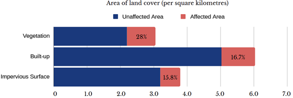
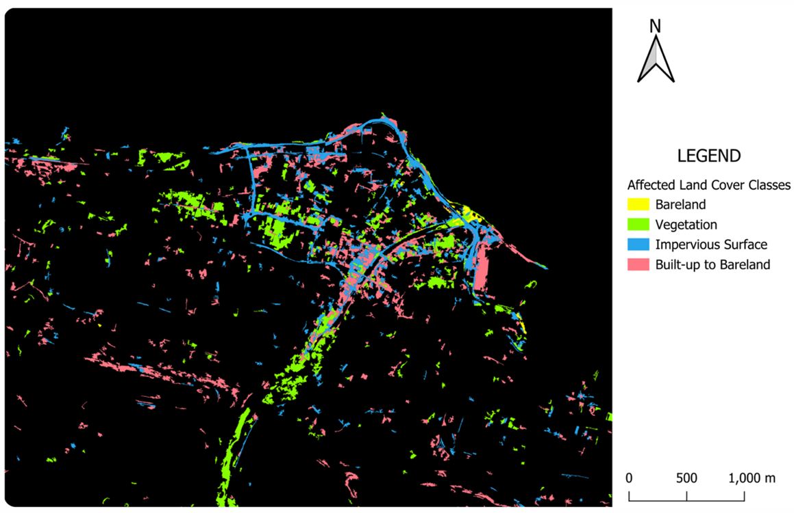
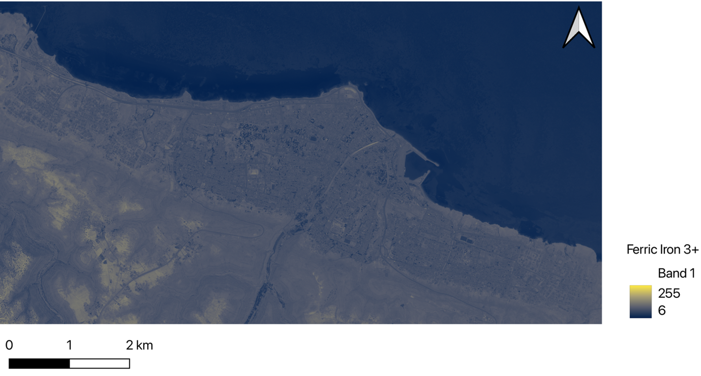

Results and Discussion
6.0 Analysis of the Results

0.855 km² of vegetation was turned into bare land or water bodies.
1.01 km² of built-up land was turned into bare land or a water body.
0.600 km² of impervious surface was turned into bare land or a water body.

7.0 Recommendations
7.1 Soft Engineering Strategies – Prioritise Reforestation & Greening Efforts
The soil composition analysis conducted in Section 4.4, reveals that Derna has a mixed soil composition, with Lithosols, also known as skeletal soils or shallow soils, as the dominant soil type. In addition, the city also has the soil types: Chromic Luvisols and Vertic Cambisols present, however in smaller amounts.
Soft Engineering strategies are an intangible approach to prevent the immediate effects of floods and reduce post-flood issues. Two such strategies are reforestation and greening efforts which are extremely effective in preventing the occurrence of floods whilst concurrently reducing their severity (Institute of Chartered Foresters, 2017). Strategically planting vegetation alongside rivers and floodplains can obstruct the flow of water into rivers, significantly reducing surface runoff (Institute of Chartered Foresters, 2017). This enables a more controlled and prolonged release of water into the Derna river, thereby reducing flood occurrence. The notable decrease in vegetation cover emphasises a necessity to increase greening efforts, as vegetation plays a critical role in absorbing water, thereby reducing surface runoff. This phenomenon mitigates the impact of floods, both in the riverbank areas and affected districts.
The vegetation planted must be suitable for the soil type, as explored in Section 7.1.1.
7.1.1 Shallow Soils – Lithosols
Shallow soils (known in earlier soil classification systems as Lithosols) are highly erodible and tend to occur over steep slopes and mountainous regions (Osman, 2018). Characterized by poor drainage and low iron content, this soil type has an extremely limited agricultural use (Osman, 2018).
7.1.2 Clay soils
Clay soils are distinguished for their nutrient-rich nature, particularly their high iron (Fe) content (The Royal Horticultural Society, n.d.) which enables high plant fertility. In addition, the soil’s resistance to compaction caused by plant roots allows plants to have an increased uptake of essential nutrients (The Royal Horticultural Society, n.d.).
- Chromic Luvisols
Luvisols are characterized by their high nutrient, such as iron, and clay content with predominantly good drainage. These qualities make it highly suitable for a wide range of agricultural practices and vegetation (Encyclopaedia Britannica, 2016). In addition, Luvisols typically form on flat or gently sloping landscapes under climatic regimes ranging from cool temperate to warm Mediterranean (The editors of Encyclopaedia Britannica, 2016).
- Vertic Cambisols
Cambisols exhibit high iron content, although it is far lower than Luvisols due to their smaller clay composition (Jordanova, 2017). Similar to Luvisols, Cambisols tend to form on flat or gently sloping landscapes under climatic regimes ranging from cool temperate to warm Mediterranean (Encyclopaedia Britannica, 2011).
7.1.3 Most Suitable Vegetation Based on Soil Type
As the soil types vary across different regions of Derna, this brings into question the suitability for planting vegetation. Based on Figure 17, clay soils (Luvisols and Cambisols) appear more yellow on the map as a result of their higher Fe content and are more evident in low-lying areas. In contrast, the shallow soils (Lithosols) appear bluer on the map and are more prevalent in steeper areas like hills due to the mountainous terrain of Derna.
For Luvisols and Cambisol, flood-resistant plants native to Derna, to reduce cost, that grow best in clay-rich soil such the Tamarix aphylla and Typha domingensis (Fern, 2014) are the most suitable for flood mitigation. In contrast, the bluer, Lithosols favor the growth of succulent plants like the Artemisia Herba-Alba (Gazel, 2023) and Sea Orache (PlantIn, n.d.).

7.2 Prioritising Flood Mitigation Efforts Based on Flood-Risk
The LULC detection highlights the extreme vulnerability of Derna’s buildings and roads to flood inundation. To address this issue, urban planners should implement revised zone codes to prohibit the construction of residential and vital infrastructure, such as utility and water supply facilities, in flood-affected areas. Policymakers implementing flood mitigation strategies should prioritise mitigation and evacuation strategies for the affected areas, emphasising heavily impacted zones and critical infrastructure like roads (depicted blue in Figure 16).
7.3 Investment in Insurance Policies
In addition, residents, and infrastructure owners in affected built-up areas should consider purchasing insurance schemes to manage the economic impact of flood damage.
8.0 Future Work
- Explore other satellite imagery, image segmentation, and classification methods to see if accuracy can be improved.
- Explore hydrolysis analysis methods using DEM and QGIS plugins to simulate flood events.
- Research into the local context and find out the locations of key infrastructures to prioritise their protection against floods. This understanding is crucial for tailoring recommendations specific to Derna’s socio-political circumstances. It will also provide insights into the primary reason behind the severity of the flood: Was it primarily due to human negligence, such as the lapse in dam maintenance since 2002, or natural forces, such as Storm Daniel. Ultimately, this analysis aims to address the question: ‘To what extent could this flood have been prevented?’
- Examine the impact on Derna’s water supply as it is connected to the desalination pipe from the Mediterranean Sea (Naar, 2023) which has become polluted because of the flood, as illustrated in Section 5.11.
References
Abdulrahim, R. (2023, September 23). Derna, Libya’s ‘City of poets,’ pays a heavy price in floods. The New York Times. https://www.nytimes.com/2023/09/23/world/middleeast/libya-floods-derna.html
ArcGIS. (n.d.). GNDVI. ArcGIS Pro. https://pro.arcgis.com/en/pro-app/latest/arcpy/image-analyst/gnvdi.html
Britannica, T. Editors of Encyclopaedia (2011, June 29). Cambisol. Encyclopedia Britannica. https://www.britannica.com/science/Cambisol
Britannica, T. Editors of Encyclopaedia (2016, November 14). Luvisol. Encyclopedia Britannica. https://www.britannica.com/science/Luvisol
European Space Agency. (2022, December 6). GEOEye-1. Earth Online. https://earth.esa.int/eogateway/missions/geoeye-1
European Space Agency. (n.d.). Sentinel-2 - Missions. https://sentinel.esa.int/web/sentinel/missions/sentinel-2
Fern, K. (2014). Tamarix aphylla. Useful Tropical Plants. https://tropical.theferns.info/viewtropical.php?id=Tamarix+aphylla
Fern, K. (2014). Typha domingensis. Useful Tropical Plants. https://tropical.theferns.info/viewtropical.php?id=Typha+domingensis
Food and Agriculture Organization. (n.d.). FAO-Unesco Soil map of the world. https://www.fao.org/3/as357e/as357e.pdf
GISGeography. (2023, October 18). Sentinel-2 Bands and Band Combinations. GISGeography. https://gisgeography.com/sentinel-2-bands-combinations/
GISGeography. (2023, October 19). Landsat 8 Bands and Band Combinations. GISGeography. https://gisgeography.com/landsat-8-bands-combinations/
GISGeography. (2023, October 29). SRTM Shuttle Radar Topography Mission. GIS Geography. https://gisgeography.com/srtm-shuttle-radar-topography-mission/
Henrich, V., Jung, A., Götze, C., Sandow, C., Thürkow, D., Gläßer, C. (2009): Development of an online indices database: Motivation, concept and implementation. 6th EARSeL Imaging Spectroscopy SIG Workshop Innovative Tool for Scientific and Commercial Environment Applications Tel Aviv, Israel, March 16-18, 2009.
Henrich, V., Krauss, G., Götze, C., Sandow, C. (2012): IDB - www.indexdatabase.de, Entwicklung einer Datenbank für Fernerkundungsindizes. AK Fernerkundung, Bochum, 4.-5. 10. 2012.
Institute of Chartered Foresters. (n.d.). Trees can Reduce Floods. The Institute of Chartered Foresters. https://www.charteredforesters.org/trees-can-reduce-floods
Jordanova, N. (2016). Soil magnetism: Applications in Pedology, Environmental Science and Agriculture. Academic Press.
Jordanova, N. (2017). The magnetism of soils with little or no profile differentiation. In Elsevier eBooks (pp. 287–330). https://doi.org/10.1016/b978-0-12-809239-2.00006-1
Landsat NASA. (2023, January 11). LandsAt 8 | Landsat Science. Landsat Science | a Joint NASA/USGS Earth Observation Program. https://landsat.gsfc.nasa.gov/satellites/landsat-8/
Loveluck, L., Ludwig, J., Chamaa, M. E., & Dadouch, S. (2023, October 5). How government neglect, misguided policies doomed Libya to deadly floods. Washington Post. https://www.washingtonpost.com/world/2023/10/05/libya-derna-floods-disaster-government/
Maxar. (n.d.). Open Data Program | Disaster Response Geospatial Analytics. https://www.maxar.com/open-data
Naar, I. (2023, September 29). Libyan authorities warn that Derna’s main water supplies are contaminated with bacteria. The National. https://www.thenationalnews.com/mena/2023/09/28/libyan-authorities-warn-that-dernas-main-water-supplies-are-contaminated-with-bacteria/
NV5 Geospatial. (n.d.). Broadband Greenness. https://www.nv5geospatialsoftware.com/docs/BroadbandGreenness.html
Osman, K. T. (2018b). Shallow soils. In Springer eBooks (pp. 67–82). https://doi.org/10.1007/978-3-319-75527-4_4
Pietromarchi, V. (2023, September 26). Natural disaster or man-made, why was Libya so vulnerable to floods? Al Jazeera. https://www.aljazeera.com/news/2023/9/14/natural-disaster-or-man-made-why-was-libya-so-vulnerable-to-floods
PlantIn. (n.d.). Sea Orache Plant Care & Growing Basics: Water, Light, Soil, Propagation etc. | PlantIn. https://myplantin.com/plant/3645
Satellite Imaging Corporation. (n.d.). GeoEye-1 Satellite Sensor. https://www.satimagingcorp.com/satellite-sensors/geoeye-1/
Satellite Imaging Corporation. (n.d.). Landsat-8 Satellite Sensor. https://www.satimagingcorp.com/satellite-sensors/other-satellite-sensors/landsat-8/
Satellite Imaging Corporation. (n.d.). Landsat-9 Satellite Sensor. https://www.satimagingcorp.com/satellite-sensors/other-satellite-sensors/landsat-9/
Satellite Imaging Corporation. (n.d.). Sentinel-2a Satellite Sensor. https://www.satimagingcorp.com/satellite-sensors/other-satellite-sensors/sentinel-2a/
Smith, P. (2023, September 14). Death toll hits 11,300 in Libyan city destroyed by floods. NBC News. https://www.nbcnews.com/news/world/libya-floods-death-toll-derna-rcna105001
The Royal Horticultural Society. (n.d.). Soil types. Royal Horticultural Society. https://www.rhs.org.uk/soil-composts-mulches/soil-types
The Royal Horticultural Society. (n.d.). Soil types. Royal Horticultural Society. https://www.rhs.org.uk/soil-composts-mulches/clay-soils
Tiwari, A. K., Caglayan, K., Hoat, T. X., Al-Subhi, A. M., Nejat, N., & Reddy, G. (2023). Phytoplasma diseases of major crops, trees, and weeds. Elsevier.